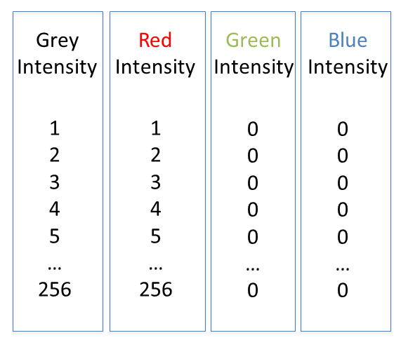
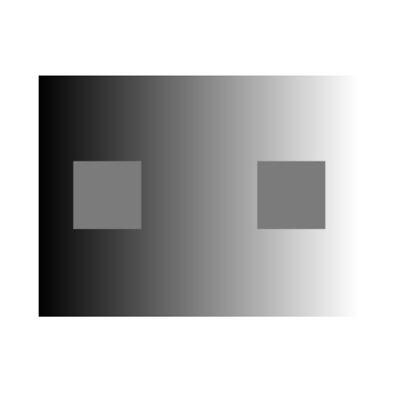
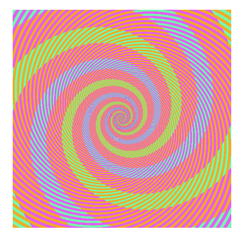
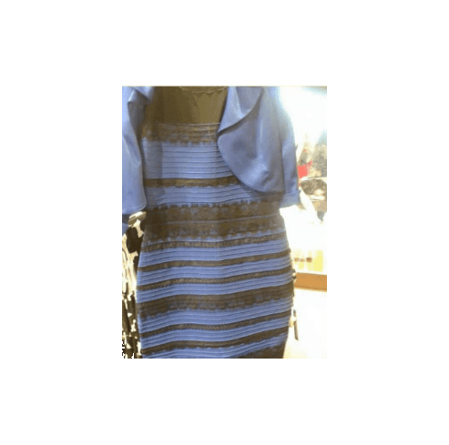
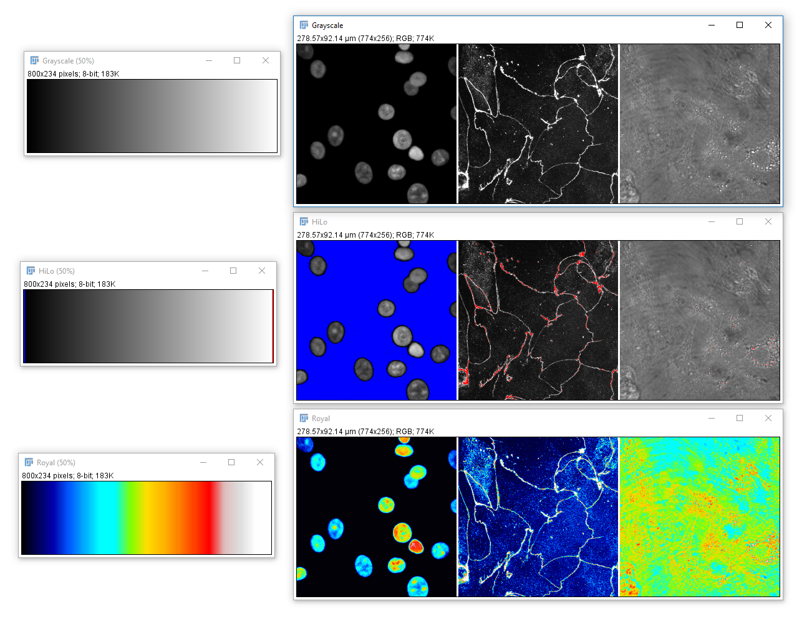

Channels, Colours, LUTs
Erick Martins Ratamero
Research Fellow
- Open
06-MultiChannel.tif - (If opening via URL run
[Image > Hyperstacks > Stack to Hyperstack]) - Navigate through the channels then run Channels Tool
[Image > Color > Channels Tool]and change to Greyscale


In this image, each channel already has an associated Look Up Table (LUT)
Change to Composite mode

- Use the check boxes (channels tool) to turn channels off
- Navigate through the channels. What happens?
- Adjust the Black and White Points
[Image > Adjust > Brightness & Contrast] - Draw a ROI on a bright area and Measure ('m')
IMPORTANT! The nav bar still selects the active channel, and that is where measurements / maniplulations are applied!
The infobar text, slider and 1px coloured image border all indicate which channel is selected.
Colour in your images is (almost always) dictated by arbitrary lookup tables


Lookup tables (LUTs) translate an intensity (1-256 for 8 bit) to an RGB display value
Colour in your images is (almost always) dictated by arbitrary lookup tables

Lookup tables (LUTs) translate an intensity (1-256 for 8 bit) to an RGB display value
You can use whatever colours you want (they are arbitrary after all), but the most reliable contrast is greyscale

More info on colour and sensitivity of the human eye here
Additive and Subtractive Colours can be mixed in defined ways
Non 'pure' colours cannot be combined in reliable ways (as they contain a mix of other channels)
BUT! Interpretation is highly context dependent!
~10% of the population have trouble discerning Red and Green. Consider using Green and Magenta instead which still combine to white.

- Open
06-MultiChannel.tif - (If opening via URL run
[Image > Hyperstacks > Stack to Hyperstack]) - Run
[Image > Lookup Tables], try a few different ones - Run Channels Tool
[Image > Color > Channels Tool], make sure you're in Color or Composite mode, hit More, select a LUT - Run
[Image > Color > Display LUTs]to see all the LUTs on your version of Fiji

A couple of useful LUTs:
